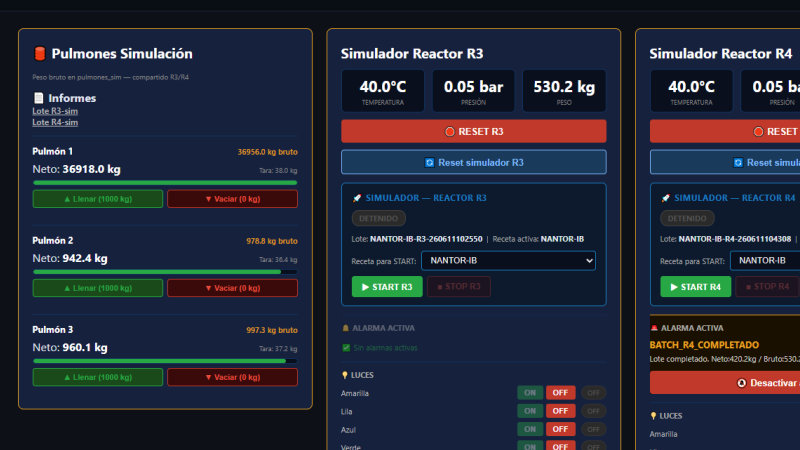

Demostración In Situ en Planta Piloto
Antes de la firma definitiva, coordinaremos una jornada técnica exclusiva en nuestra propia
planta demostrativa. Verá los reactores reales operando en vivo, comprobará la agilidad del
SCADA y validará los informes de lote automatizados.
Entorno de
Entrenamiento sin Riesgos
Durante la visita le mostraremos nuestro gemelo digital
integrado de simulación de reactores (R3 y R4), diseñado para que los operarios se entrenen
en las 10 fases críticas de fabricación sin consumir materia prima.
